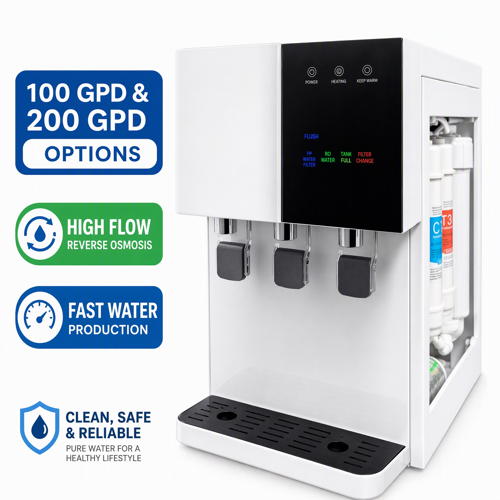
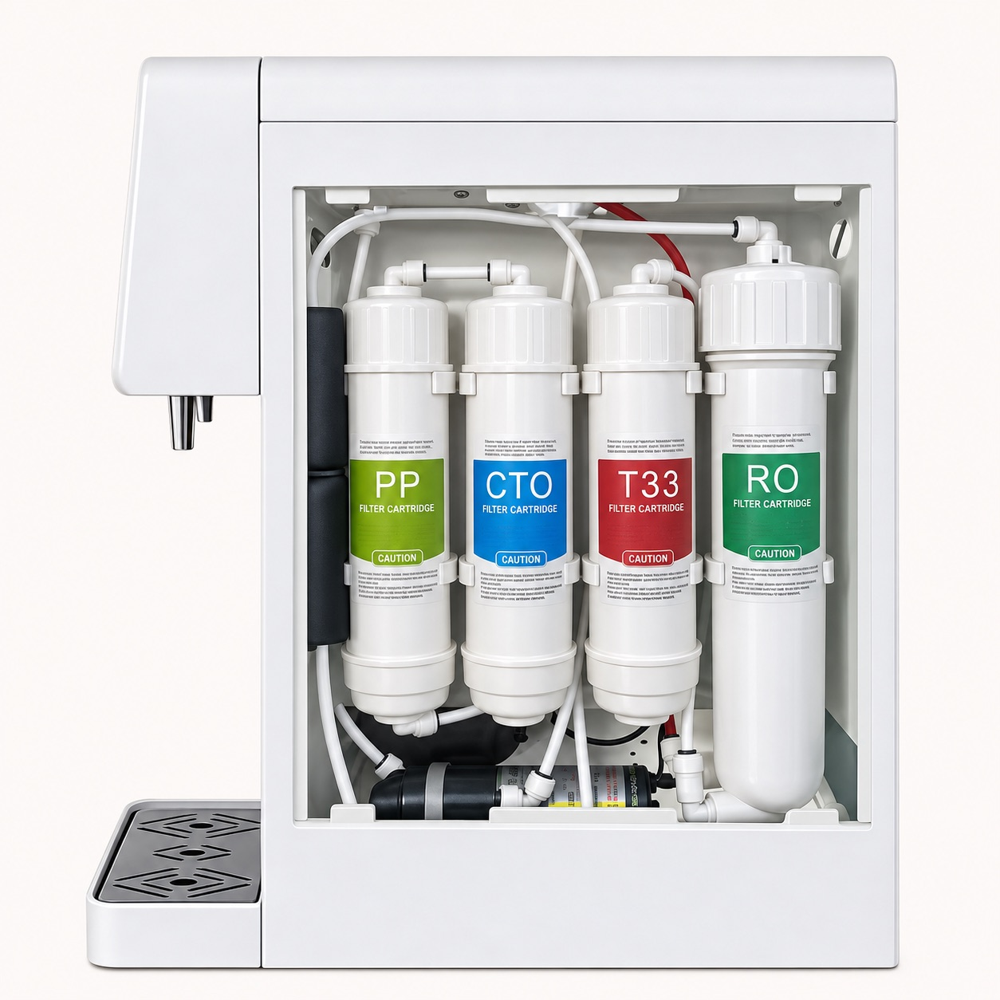

Osmose inverse sur comptoir. Eau chaude et froide. Conçue pour votre marché.
Une fontaine à eau à osmose inverse raccordée au réseau, avec refroidissement par compresseur, grand écran intelligent et deux ou trois sorties d’eau au choix. Choisissez 100 ou 200 GPD et définissez la configuration adaptée à vos clients.
Vous hésitez sur la configuration ? Décrivez votre usage et nous vous aiderons à la définir.
Visualisation d’un écran anglais · les fonctions personnalisées affichées dépendent de la configuration.
RÉFÉRENCES DE CONCEPTION DE L’USINE
Façades noires et blanches
Ces cinq illustrations d’usine présentent des modèles à trois sorties. Des configurations à deux ou trois sorties peuvent être étudiées pour votre commande. Les illustrations de référence ne définissent ni les fonctions ni les performances commandées.
Détail de la façadeIndicateurs d’état

Capacités de membrane au choixInstallation sur comptoirDistribution d’eau chaude et réfrigérée
4 étapesPP · CTO · RO · T33
100 / 200Capacités de membrane en GPD
295 mmLargeur du boîtier
TDSAffichage des valeurs de l’eau
CHOISIR PLUS CLAIREMENT
Une plateforme. Des besoins d’achat variés.
Pour les marques et distributeurs
Développez une gamme OEM de fontaines à eau de comptoir à osmose inverse autour d’un boîtier compact, d’un refroidissement par compresseur et d’un écran de commande personnalisable. Définissez avec l’usine votre marque propre, l’emballage, la capacité de membrane et les exigences du marché de destination.
Pour les logements, bureaux et projets
Prévoyez un point d’eau potable chaude et froide là où le réseau d’eau, une évacuation et l’électricité sont disponibles. Indiquez le nombre prévu d’utilisateurs et la demande en pointe afin que nous puissions vérifier la configuration pour votre usage.
CONFIGURATION
Commencez par ce que vous savez.
Le refroidissement par compresseur, la commande intelligente et la mesure du TDS constituent la configuration proposée à l’export. Les fonctions supplémentaires sont convenues pour votre commande.
La quantité et les exigences détaillées peuvent être précisées dans le formulaire de demande.
100 GPD ou 200 GPD ?
Ces options correspondent à la production quotidienne nominale de la membrane, et non au débit instantané au robinet. La production réelle dépend des conditions d’alimentation en eau et de la configuration finale du système.
Quels éléments sont personnalisables ?
La marque, la langue d’affichage et les fonctions supplémentaires peuvent être étudiées. Les fonctions IoT et antibactérienne sont optionnelles ; leur mise en œuvre, leur compatibilité et les éventuels rapports d’essais sont confirmés avant commande.
Que doit confirmer votre devis ?
Alimentation électrique et prise, performances eau chaude et froide, capacités de stockage, consommables, quantité commandée, délai et documentation pour votre marché de destination.
ÉCRAN INTELLIGENT
Suivez l’état. Définissez l’interface.
La mesure du TDS est disponible sur ce modèle. Les libellés anglais facilitent la compréhension des états de fonctionnement ; la langue de l’écran et les fonctions optionnelles peuvent être adaptées à votre projet.
Exemple d’écran personnalisable. Les chiffres avec tous les segments allumés, tels que 188°C et 888, sont des illustrations, pas des mesures ni des promesses de performance. Les indicateurs IoT et antibactérien correspondent à des configurations optionnelles. Le TDS seul ne permet pas d’établir la potabilité de l’eau.
Des filtres accessibles. Un entretien facile à planifier.
Cartouche à sédiments PP
Préfiltration des particules en suspension.
Cartouche à charbon CTO
Prétraitement au charbon avant la membrane d’osmose inverse.
Membrane d’osmose inverse
Séparation par osmose inverse ; choisissez 100 ou 200 GPD.
Cartouche à charbon T33
Traitement final au charbon pour le goût.
Les intervalles de remplacement dépendent de la qualité de l’eau, de l’utilisation et des cartouches choisies. Demandez le jeu de remplacement compatible et les instructions d’entretien avec votre devis.

Référence d’échantillon d’usine retouchée. Disposition physique de gauche à droite : PP, CTO, T33, RO. Le composant inférieur est une pompe de surpression. Cette disposition n’est pas un schéma de circulation de l’eau ; l’agencement interne final dépend de la configuration.
CARACTÉRISTIQUES DU PRODUIT
Format compact. Détails pratiques.
E500-TS-1 (B/W) — caractéristiques de sélection confirmées
Type de produit
Fontaine à eau de comptoir à osmose inverse raccordée au réseau
Refroidissement
Refroidissement par compresseur avec commande intelligente
Capacités de membrane d’osmose inverse au choix
100 GPD / 200 GPD
Filtration
PP, CTO, RO et T33
Dimensions (L × P × H)
295 × 440 × 520 mm
Hauteur libre sous les sorties
245 mm (plan de référence)
Sorties d’eau
Deux / Trois
Écran
Grand écran intelligent avec mesure du TDS
Raccordements
Réseau d’eau, évacuation du concentrat et alimentation électrique avec terre
Options OEM
Marquage, emballage, affichage localisé ; fonctions supplémentaires selon accord
Confirmez la tension, la puissance nominale, les capacités des réservoirs, les plages de température et les performances de distribution en pointe dans la fiche technique propre à la commande.
AVANT L’INSTALLATION
Trois raccordements à prévoir.
Cette fontaine de comptoir à osmose inverse est raccordée au réseau. Elle nécessite une arrivée d’eau du réseau, un raccordement séparé pour l’évacuation du concentrat et une prise électrique adaptée avec terre.
Vue des raccordements · la position des raccords dépend de la configuration commandée.
01 · Arrivée d’eau Réseau d’eau vers l’entrée prévue.
02 · Évacuation du concentrat d’osmose inverse Conduite séparée de concentrat vers une évacuation adaptée.
03 · Alimentation électrique avec terre Adaptez l’alimentation et la prise à votre commande.
Scène d’installation de référence. Prévoyez un accès latéral pour les filtres, les tuyaux et la ventilation. Respectez les instructions fournies et les exigences locales.
QUESTIONS DES ACHETEURS
Avant de demander un devis.
Cette fontaine de comptoir à osmose inverse doit-elle être raccordée ?
Oui. Elle se raccorde au réseau d’eau, à une évacuation séparée du concentrat d’osmose inverse et à une alimentation électrique adaptée avec terre. Ce n’est pas une fontaine à remplissage manuel sans installation.
Puis-je commander une version 100 GPD ou 200 GPD ?
Les deux capacités de membrane sont disponibles. Le GPD correspond à la production quotidienne nominale de la membrane, et non au débit au robinet. Les conditions d’alimentation et la configuration finale influent sur la production.
Utilise-t-elle un refroidissement par compresseur ?
Le refroidissement par compresseur avec commande intelligente constitue la configuration proposée à l’export. Étudiez les exigences particulières avec l’usine.
Proposez-vous des fontaines OEM ou sous marque propre ?
Oui. Précisez votre marque, l’emballage, la langue d’affichage, la quantité nécessaire et le marché de destination. La quantité minimale, le délai et la documentation propre à la commande sont confirmés dans le devis.
Les fonctions TDS, IoT et antibactérienne sont-elles incluses ?
La mesure du TDS est disponible. Les fonctions IoT et antibactérienne sont des personnalisations optionnelles ; l’interface affichée est un exemple. Confirmez les fonctions mises en œuvre et la documentation justificative pour votre commande.
Quelles informations faut-il pour un devis ?
Commencez par vos coordonnées et l’usage prévu. Ajoutez la capacité de membrane souhaitée, la quantité approximative, la destination et les besoins de personnalisation lorsque vous les connaissez. Vous pouvez demander de l’aide pour choisir une configuration.
Comment planifier le remplacement des filtres ?
Demandez le jeu de remplacement compatible PP, CTO, RO et T33 ainsi que les instructions d’entretien. Les intervalles de remplacement dépendent de la qualité de l’eau d’alimentation, de l’utilisation et des cartouches commandées.
DÉFINISSONS VOTRE E500-TS-1
Votre marché. Votre configuration.
Indiquez votre usage, la quantité et la destination. Nous vous aiderons à choisir la configuration.